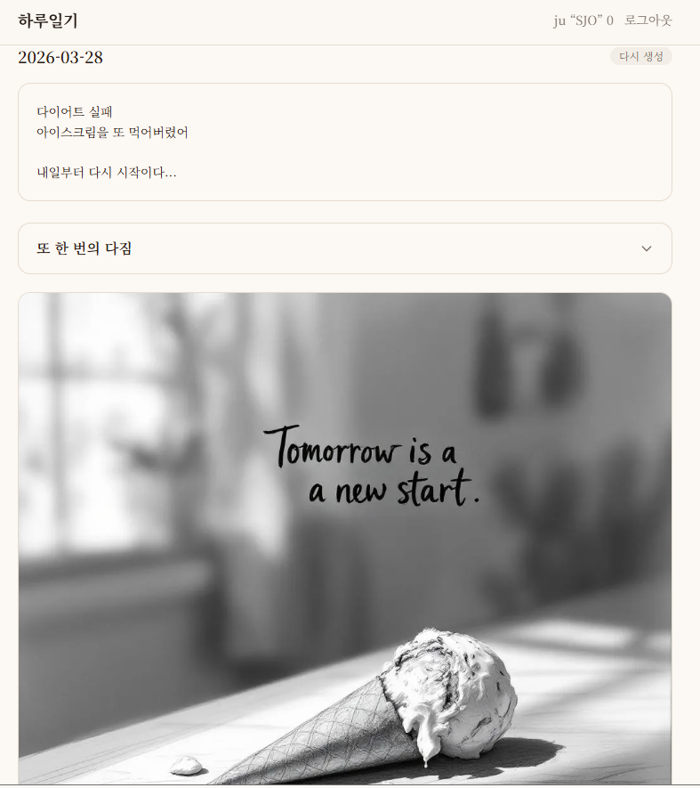
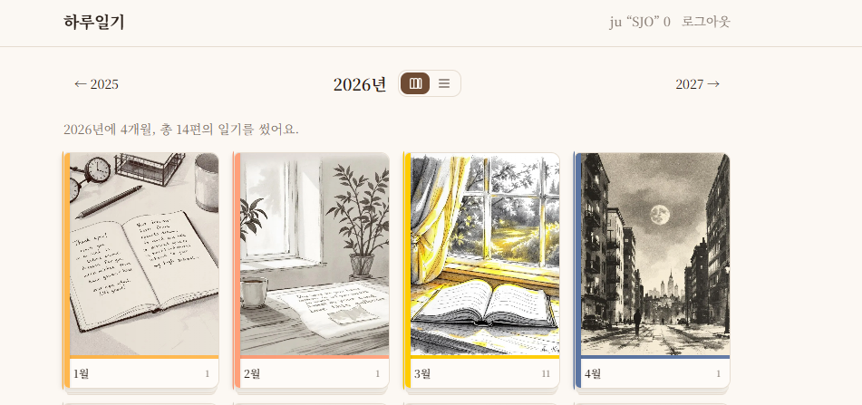
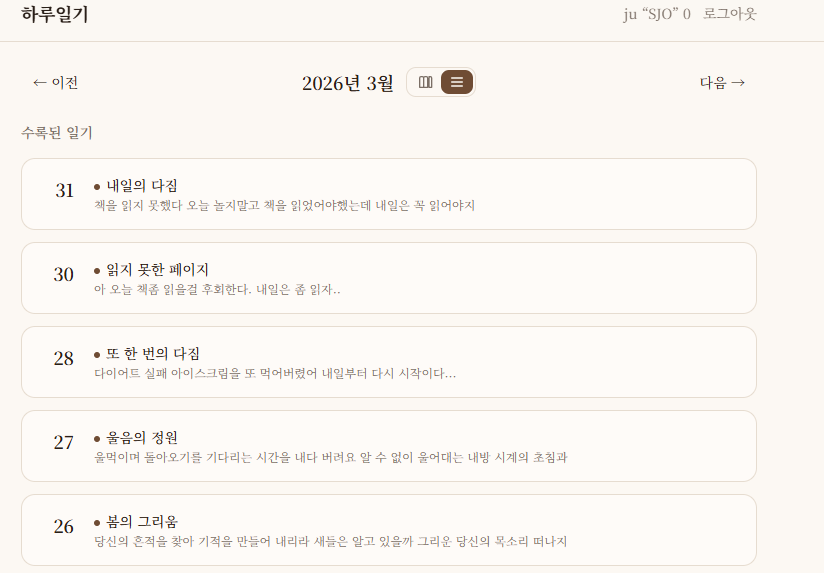

AI가 감정을 읽고 연필 스케치를 그려주는 다이어리 플랫폼
사용자가 하루의 이야기를 자유롭게 작성하면, CrewAI 멀티 에이전트가 감정을 분석하고 연필 스케치 아트 + 시적 제목 + ASMR 사운드를 생성하여 "세상에 하나뿐인 한 페이지"를 만들어줍니다. 후회가 담긴 일기에는 "존재하지 않은 기억" — 다르게 행동했다면 펼쳐졌을 가상의 하루를 AI가 그려줍니다.
실제 서비스에서 캡처한 주요 화면입니다.



| Agent | 역할 | 입력 | 출력 | 분류 |
|---|---|---|---|---|
| Agent 1 — 감정 분석가 | 일기에서 감정을 읽는다 | 일기 텍스트 | EmotionAnalysis | 핵심 |
| Agent 2 — 시인 | 감정을 시적 언어로 표현 | EmotionAnalysis | 시적 제목 + 시 본문 | 핵심 |
| Agent 3 — 아트 디렉터 | 감정을 스케치로 시각화 | EmotionAnalysis | R2 이미지 URL | 핵심 |
| Agent 5 — 기억 재구성가 | "다르게 행동했다면?" | Emotion + 원문 | 리메이크된 이야기 | 부가 |
CrewAI는 내부적으로 동기 함수로 에이전트를 실행합니다. 그러나 FastAPI의 SSE 스트리밍은 asyncio 이벤트 루프 위에서 동작합니다. 동기 에이전트를 직접 호출하면 이벤트 루프가 블로킹되어 SSE 프로그레스 전송이 멈춥니다.
AGENT_MAX_WORKERS = int(os.getenv("AGENT_MAX_WORKERS", "4"))
AGENT_TIMEOUT_SECONDS = int(os.getenv("AGENT_TIMEOUT_SECONDS", "30"))
# 글로벌 executor — 프로세스 전체에서 공유
executor = ThreadPoolExecutor(max_workers=AGENT_MAX_WORKERS)
#CrewAI의 동기 함수를 별도 스레드에서 실행하므로, asyncio 이벤트 루프는 블로킹되지 않습니다.
#이벤트 루프가 자유로우니 SSE 스트리밍도 계속 동작합니다.
#추가로 시간 제한까지 걸어서, CrewAI가 30초 이상 응답하지 않으면 asyncio 레벨에서 취소합니다.
async def run_agent_with_timeout(func, *args, timeout=AGENT_TIMEOUT_SECONDS):
loop = asyncio.get_event_loop()
return await asyncio.wait_for(
loop.run_in_executor(executor, partial(func, *args)),
timeout=timeout,
)
가장 중요한 의사결정은 에이전트를 핵심(critical)과 부가(optional)로 분류하고, 실패 처리를 구조적으로 분리한 것입니다.
| 분류 | 에이전트 | 실패 시 동작 | 근거 |
|---|---|---|---|
| 핵심 | Agent 2, 3 | 예외 전파 → SSE error → 재시도 안내 | 결과 화면 구성 불가 |
| 부가 | Agent 5 | memory = None → 카드 비노출 | 핵심 결과만으로 완전한 경험 |
AI 파이프라인은 20~40초가 걸립니다. 로딩 스피너만 보여주면 "멈춘 건 아닌가?" 불안감을 유발합니다. 진행 단계를 실시간으로 전달하여 대기 경험 자체를 콘텐츠로 만드는 것이 설계 목표였습니다.
| SSE 이벤트 | 상태 | 화면 |
|---|---|---|
started | generating | 연필 사운드 ASMR 재생 시작 |
step:analyzing | analyzing | "오늘의 이야기를 읽고 있어요..." |
step:creating | creating | "어떤 하루였는지 느끼며 그리는 중..." |
complete | complete | 결과 화면 (스케치 + 시 + 사운드) |
error | error | "다시 시도해 주세요" + 재시도 버튼 |
| 우선순위 | 항목 | 근거 |
|---|---|---|
| 높음 | httpx 클라이언트 레벨 timeout | asyncio timeout 후 스레드 점유 해소 |
| 높음 | SSE 폴링 fallback | 모바일 네트워크 불안정 대응 |
| 중 | R2 orphan 정리 스크립트 | 비동기 삭제 실패분 대응 |
| 중 | 카카오/GitHub 소셜 로그인 | 사용자 접근성 확대 |
| 낮음 | AI 사운드 생성 (Suno API) | 정적 매핑 → 동적 생성 |
이력서와 채용공고를 업로드하면 5개의 AI 에이전트가 실제 기술 면접을 시뮬레이션하고, 답변을 평가하여 종합 리포트를 제공합니다.
AI 기술 면접 코치는 두 가지 핵심 기능으로 구성됩니다.
이력서(PDF)와 채용공고(JD)를 업로드하면 CrewAI 기반 5개 에이전트가 기술 면접을 진행합니다. 턴 기반 Q&A, 꼬리질문(최대 2회), 실시간 평가, 종합 리포트를 제공합니다.
Obsidian study 태그 기반 MD 파일을 전송하면 RAG 기반으로 면접형 문제를 자동 생성합니다. 오답 시 관련 노트와 누락 포인트를 연결하여 학습 효율을 높입니다.
4개 레이어로 구성된 마이크로서비스 아키텍처
5개의 AI 에이전트가 3단계로 협업하여 면접을 진행합니다.
3단계 파이프라인으로 면접이 진행됩니다.
POST /api/interview/createPOST /api/interview/{id}/answerPOST /api/interview/{id}/end프로젝트의 기술적 차별점을 소개합니다.
pgvector의 similarity_search로 사용자의 이력서, JD, MD 스터디 노트를 교차 검색하여 개인화된 면접 질문을 생성합니다.
AI 질문 시나리오 생성(10~30초)을 @Async 백그라운드로 처리하고, 프론트엔드에서 5초 간격 폴링으로 상태를 확인합니다.
사용자의 MD 노트와 면접 답변을 대조하여 "학습O+답변O", "학습O+답변X", "미학습" 3단계로 지식 갭을 분류합니다.
PostgreSQL 16 + pgvector — 7개 테이블
프론트엔드부터 인프라까지 전체 기술 구성
개발 과정에서 마주한 핵심 기술 이슈와 해결 과정
@Async로 백그라운드 준비 처리 + 세션
상태(PREPARING → READY / FAILED) 관리. 프론트엔드에서 React
Query refetchInterval로 5초 폴링하고, PREPARING
세션이 없으면 폴링 자동 중단
user_id를 포함하고, RAG
검색 Tool에서 user_id 필터링으로 해당 사용자의
노트만 similarity_search. CrewAI Tool 생성 시 user_id를 주입하여
에이전트가 자동으로 격리된 검색을 수행